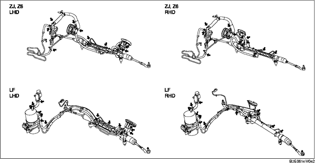

SERVOLENKUNGSÖL PRÜFEN
B3E061432040W01
Ölstand prüfen
1. Sicherstellen, dass der Ölstand im Ausgleichsbehälter bei kaltem Motor zwischen den Markierungen MAX und MIN liegt.
-
• Wenn der Ölstand nicht den Vorgaben entspricht, diesen durch Beifüllen/Ablassen anpassen (MIN-MAX im Ausgleichsbehälter).
-
Vorgeschriebenes Servolenkungsöl
-
ATF M-III oder entsprechendes Produkt (z.B. Dexron ® II)
Prüfung auf Undichtigkeiten
1. Den Motor anlassen und im Leerlauf laufen lassen.
2. Zum Druckaufbau das Lenkrad bis zum Anschlag nach links und rechts einschlagen.
-
Achtung
-
• Das Lenkrad nicht länger als 5 s voll einschlagen. Es ist möglich, dass die Öltemperatur zu stark steigt und dies negativen Einfluss auf die Ölpumpe hat.
3. An den abgebildeten Stellen auf Öllecks prüfen.

-
• Wenn ein Ölleck gefunden wird, die entsprechenden Teile reparieren.
Öldruck prüfen
1. Die SSTs so aufstellen, dass das Ventil des SST wie abgebildet zum Lenkgetriebegehäuse weist.
2. Den Druckschlauch der Ölpumpenseite abziehen. Dann die in Schritt 1 aufgestellten SSTs anschließen.
-
Anzugsmoment
-
29,4-44,1 Nm {3,00-4,49 mkg, 21,6-32,5 ft·lbf}
3. Die Anlage entlüften.
4. Den Absperrhahn ganz öffnen.
5. Den Motor starten und das Lenkrad nach links und rechts drehen und so das Servolenkungsöl auf Betriebstemperatur bringen (50-60°C {122-140 °F}).
6. Den Absperrhahn vollständig schließen.
7. Die Motordrehzahl auf 1.000 - 1.500 U/min erhöhen und den von der Lenkungspumpe erzeugten Druck messen.
-
• Wenn er unter dem Sollwert liegt, die Ölpumpe als komplette Einheit austauschen.
-
Achtung
-
• Den Absperrhahn nicht länger als 5 s vollständig geschlossen halten. Es ist möglich, dass die Öltemperatur zu stark steigt und dies negativen Einfluss auf die Ölpumpe hat.
-
Ölpumpendruck (Öltemperatur 50-60°C {122-140°F})
-
ZJ,Z6: 8,5-9,0 MPa {87-91 kg/cm2, 1235-1305 psi}
-
Z6: 10,4-11,0 MPa {107-112 kg/cm2, 1509-1595 psi}
8. Den Absperrhahn ganz öffnen und die Motordrehzahl auf 1.000-1.500 U/min erhöhen.
9. Das Lenkrad bis zum Anschlag nach links und rechts drehen und den im Lenkgetriebegehäuse erzeugten Öldruck messen.
-
Achtung
-
• Das Lenkrad nicht länger als 5 s voll einschlagen. Es ist möglich, dass die Öltemperatur zu stark steigt und dies negativen Einfluss auf die Ölpumpe hat.
-
Hinweis
-
• Wenn der Druck unter dem Sollwert liegt, ist es möglich, dass Ölpumpe oder Lenkgetriebegehäuse nicht korrekt funktionieren. Die Ölpumpe als komplette Einheit austauschen.
-
Öldruck Lenkgetriebegehäuse (Öltemperatur 50-60°C {122-140°F})
-
ZJ,Z6: 7,6-9,0 MPa {78-91 kg/cm2, 1103-1305 psi}
-
LF: 9,0-11,0 MPa {92-111 kg/cm2, 1306-1585 psi}
10. Nach Entfernen der SSTs den ölpumpenseitigen Verbindungsschlauch mit dem angegebenen Drehmoment festziehen.
-
Anzugsmoment
-
29,4-44,1 Nm {3,00-4,49 mkg, 21,6-32,5 ft·lbf}
11. Die Anlage entlüften.